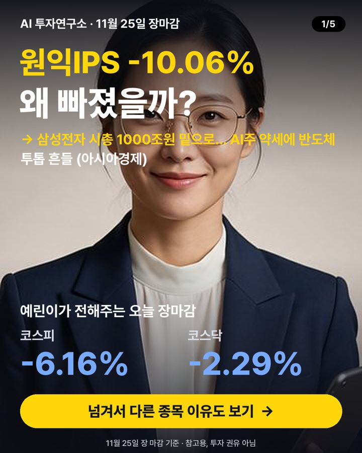

11월 25일 장마감 요약 — 코스피 -6.16%, 코스닥 -2.29%
2026-11-25 장 마감 기준 · 진행 한예린 (큰 흐름·금리)

오늘 코스피는 4,697.51로 -6.16%, 코스닥은 650.64로 -2.29% 마감했어요. 대형주 78종목 중 41개가 오르고 34개가 내렸어요. 원/달러 환율은 1,344원이에요.
지수 흐름
| 종가 | 하루 | 1주 | 1달 | |
|---|---|---|---|---|
| 코스피 | 4,697.51 | -6.16% | +0.76% | -11.21% |
| 코스닥 | 650.64 | -2.29% | +2.43% | -10.48% |
많이 오른 종목
- LIG디펜스앤에어로스페이스 +8.05% · 382,500원
호재UAE에 L‑SAM 수출 경쟁에서 주도권 잡아 계약 기대감이 커졌어요 - 유한양행 +7.56% · 82,500원
뉴스관련 기사: 유한양행 15년 만에 투톱 체제…김열홍·강대식 공동 부대표에 (매일경제) - SK바이오팜 +7.27% · 88,500원
호재세노바메이트 신규 연구 10건 발표로 기대감↑ - CJ제일제당 +6.64% · 189,600원
호재하나증권이 내년 실적 개선 기대와 매수 의견을 유지했어요 - 아모레퍼시픽 +5.92% · 146,700원
호재새로운 주름 개선 제품 출시로 매출 기대감↑
많이 내린 종목
- 원익IPS -10.06% · 61,700원
뉴스관련 기사: 삼성전자 시총 1000조원 밑으로…美 AI주 약세에 반도체 투톱 흔들 (아시아경제) - 삼성생명 -9.03% · 216,500원
뉴스관련 기사: 삼성전자 시총 1000조원 밑으로…美 AI주 약세에 반도체 투톱 흔들 (아시아경제) - SK하이닉스 -8.89% · 1,014,000원
뉴스관련 기사: SK하이닉스·中 창신메모리, 차세대 수직형 D램 기술 경쟁 '후끈' (뉴스1) - 삼성전기 -8.78% · 748,000원
악재1.7조원 현금으로 자사주를 전량 소각해 재무 부담이 커졌어요 - 삼성전자 -8.75% · 166,900원
뉴스관련 기사: 삼성, 세계 첫 500단 낸드…메모리 초격차 굳힌다 [biz-플러스] (서울경제)
누가 사고 팔았나 (순매수)
| 외국인 | 기관 | 개인 | |
|---|---|---|---|
| 코스피 | -18,193억 원 | +39억 원 | +13,449억 원 |
| 코스닥 | +165억 원 | +281억 원 | -516억 원 |
내일 체크 포인트
- 외국인 흐름 — 오늘 코스피에서 -18,193억 원 순매도
- 국제유가 — 최근 한 달 -18.14%
- 미국 10년 금리 4.85% · 공포지수 VIX 28.3
- 20일 이동평균선 위에 있는 대형주 19/78종목
이 글은 공개된 시세·수급 데이터와 그날 뉴스 제목을 정리한 참고 자료이며 투자 권유가 아닙니다. 시세는 거래소 종가 기준이고, 투자 판단과 결과의 책임은 본인에게 있습니다.